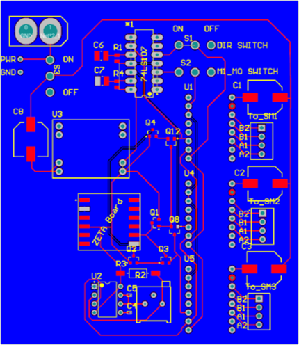
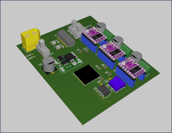
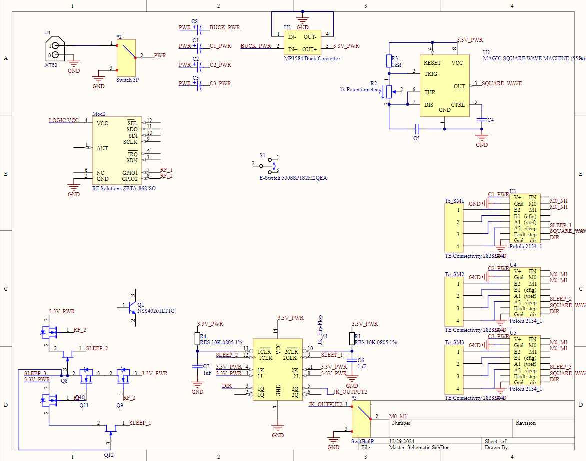
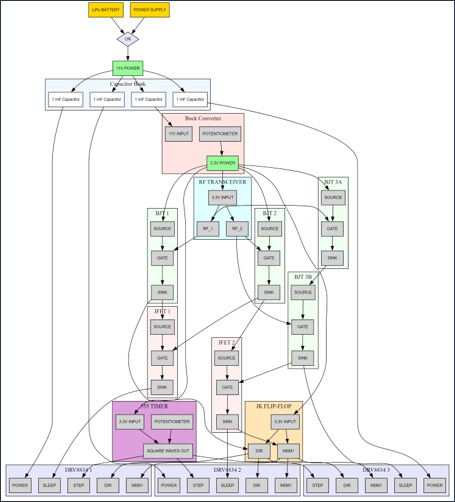

Back
THOR: Wireless Circuitboard Design (V2)
Project Overview: Wireless-enabled PCB design for controlling three stepper motors, featuring RF communication, autonomous operation capabilities, and integrated power management.
PCB Layout

2D PCB layout showing component placement and routing
Key Components:
- RF Solutions ZETA-868-SO wireless module
- Three Pololu 2154 stepper motor drivers
- MP1584 buck converter for power regulation
- 555 timer for autonomous stepping control
- Transistor arrays for motor sleep control
3D Visualization

3D rendering of the assembled PCB showing component heights and clearances
Board Specifications:
- Dimensions: 100mm × 50mm
- Layer count: 2
- Power planes: Integrated ground plane
- Mounting: 4x M3 mounting holes
Circuit Schematic

(Semi-)Complete circuit schematic showing electrical connections and component values
Circuit Blocks:
- Power Management: Buck converter with dual power source support
- Motor Control: Three independent stepper driver channels
- Wireless: SPI-based RF communication
- Logic: JK flip-flops and 555 timer for autonomous control
System Architecture

Dot diagram showing signal and power flow between components
Signal Flow:
- Wireless commands received by ZETA module
- Command processing through logic circuitry
- Square wave generation for stepping
- Motor control signals distributed to drivers
Technical Specifications:
- Input Power: 7-12V DC or 2S LiPo
- Logic Level: 3.3V
- RF Frequency: 868MHz
- Step Frequency: 0.1-100 Hz (adjustable)
- Control Interface: Sleep, Direction, and Step control per motor
Current Status
PCB design is complete and initial prototypes have been manufactured. Testing has verified basic functionality of all major subsystems. Next steps include firmware development and integration testing with the mechanical assembly.